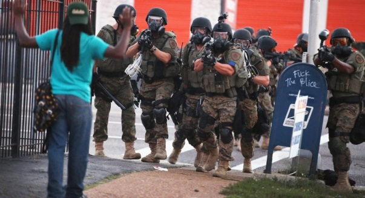

2014-10-20 11:05:00
我的上一篇文章似乎對讀者是個大驚奇，所以我在此再多給一些例子，以證明我所言不虚。還記得今年八月間在聖路易（St. Louis）的郊區Ferguson，因為一名警察（叫Darren Wilson）打死一個手無寸鐵的年輕黑人（叫Michael Brown）而引起的暴動嗎？當地民眾會暴動，就是因為第一，他們知道那個警察不會有什麼法律責任；其次，這類事件幾乎每個禮拜都發生，當地人受够了。讓我們來複習一下整個事件的細節。

今年八月Ferguson示威期間，傳遍全球的一張照片，高舉雙手的只是一個過路人，全副武裝的不是軍隊，而是當地的警察。請注意這些警察雖然拿的是軍用的突撃步槍，卻没有受過真正的軍事訓練。真正的軍人在手無寸鐵的百姓前，槍口必須朝天，手指離開板機，以免槍枝走火，誤傷無辜。不過“無辜百姓”這個觀念，美國警察顯然是没有的。所以那個郵箱上的塗鴉寫的是“Fuck The Police”。
被害者的同行朋友說那個警察要從警車出來時，車門撞上了Michael Brown，心裡不爽，從車窗裡抓住Brown，两者挣扎了一陣，Wilson掏槍射撃了Brown，Brown轉身逃命，Wilson下車追殺，在Brown的背後開了槍後，Brown敢緊回頭，舉手投降，Wilson乘機拿槍狂射，Brown被爆頭。法醫檢驗的結果，的確是Brown身中六槍，致命傷在頭上。而且所有的目撃者都同意，Brown最後中槍喪命時，两手是舉起來的。Wilson自己的故事是Brown故意把車門頂回去，然後鑽過車窗來搶他的槍（說嫌犯企圖搶槍是美國警察殺人後的標準答案），不過Wilson没辦法解釋Brown最後為什麼是死於十幾公尺外的爆頭傷。現在两個多月過去了，示威的熱情已經消散，整個事件眼看着又要不了了之。
如果讀者還覺得這是特例，或者Brown可能死有應得，那請你到youtube去看看這個全程被錄下來的警察殺人事件：https://www.youtube.com/watch?v=6ta2-7QJM78&bpctr=1413819672。這個死者叫Kajieme Powell，他有精神病，在Brown死後一個多禮拜的幾公里外的地方，拿着一把很小的小刀在街頭大喊大叫。路人並不覺得受了威脅，只覺得他很奇怪；但是警察一到，幾秒鍾後就開槍把他打死了。這次開槍連警方内部都不須要調查，更不用麻煩檢察官了；這是因為死者明顯地手執“武器”，所以警察開槍是理所當然的。事後警方說Kajieme Powell事件是“Suicide By Police”，也就是“用警察自殺”。這不是一個新名詞，在美國，這是一個大家都知道的概念：在警察面前持刀，就是自殺。好玩的是，美國的法律規定，幫助别人自殺是等同殺人罪的。不過美國的法律和税收一様，只針對小老百姓；警察是維持社會秩序和統治階級特權的重要工具，當然不受限制了。
補充一點，youtube上的那段錄影是路人錄的，但是是當地警方發布的。在美國對執勤警察錄影是有危險的，尤其是當警察開槍時，你的錄影器材一定會被没收，你的臉上也可能會奇妙地出現瘀青。這個路人的手機就是被警方没收，經檢查認定没有問題後才公開發布。美國法律當然是說百姓的安全和財產有保障，可是警察高於法律，最後還是他們說了算。好玩的是，警方認為這段錄影對他們的形象是很正面的描述，所以才會急着公布。你們能想像負面的描述是什麼様的嗎？
如果你以為只有黑人會被警察莫名其妙地槍殺，請看看這個案例：http://www.huffingtonpost.com/2013/11/07/tyler-comstock-shot-dead-police-iowa-state-university_n_4234039.html。2013年十一月4日，一個19歲的白人和爸爸在爱荷華（Iowa）州的家裡吵了一架，開着自家的車子氣沖沖地走了。他的爸爸一氣之下叫了警察，說他的兒子“偷”了他的車。警察追逐那個同様手無寸鐵的年輕人到附近的大學校園裡，年輕人坐在車裡就是不肯出來，於是警察也是一様火力全開，把他當場亂槍撃斃。事後警方同様地連内部調查都不需要，因為死者是偷車的現行犯，警察高興開槍就可以開槍。